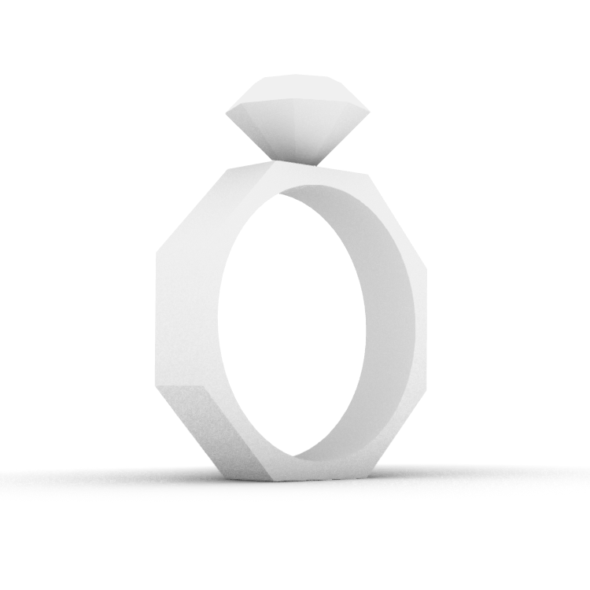

A5: Getting Meshy and Lamps
By Priyana Patel

Modifying STLs
I decided to start off small by experimenting and combining my meshes. I downloaded a ring and diamond file from Thingiverse (files linked and designers credited below). I opened the ring file in Rhino and rotated it so that it was standing upright on one of the flat edges. I then imported my diamond and placed it on the top of the ring in the center. I then brought it down a bit so that the two objects overlap. I did this to combine my mesh files but also so that the diamond would print firmly in place. I then used the MeshBooleanUnion command to combine my meshes. This function combined the objects into one, removing any overlap between the ring and the diamond. Because the files were already closed polysurfaces, I successfully exported the single structure as an STL file without additional repairs to the mesh.  I printed my ring to test my STL file and combined mesh. While it was not as smooth and clean as I had hoped, the objects were adjoined, and there were no errors or open surfaces when slicing in Cura.Files
A05 Google Drive Folder Octagonal Ring by Allessando Fileccia on Thingiverse Diamond by Bre on Thingiverse Stand by Frank Deschner on ThingiverseInspiration
 Going with the theme of pleats, waves, and ridges, I first made my stand such that an abstract cyclindrical structure could fit on top of my lamp inneereds. I sourced a stand stl file from Thingiverse and scaled the inner diameter down to 37.25 mm (the size of my lamp). I then experimented with different ideas of my abstract design with an open top and bottom.
Going with the theme of pleats, waves, and ridges, I first made my stand such that an abstract cyclindrical structure could fit on top of my lamp inneereds. I sourced a stand stl file from Thingiverse and scaled the inner diameter down to 37.25 mm (the size of my lamp). I then experimented with different ideas of my abstract design with an open top and bottom.